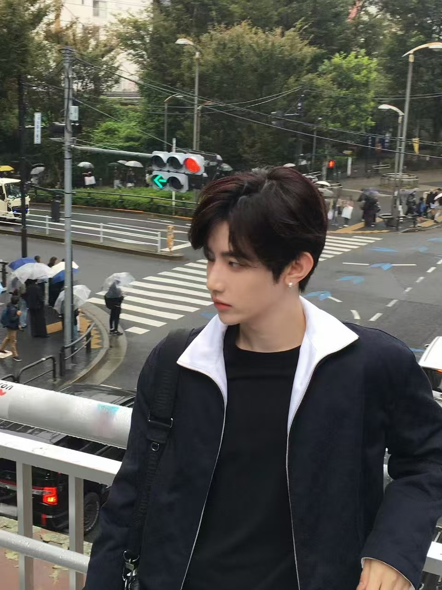
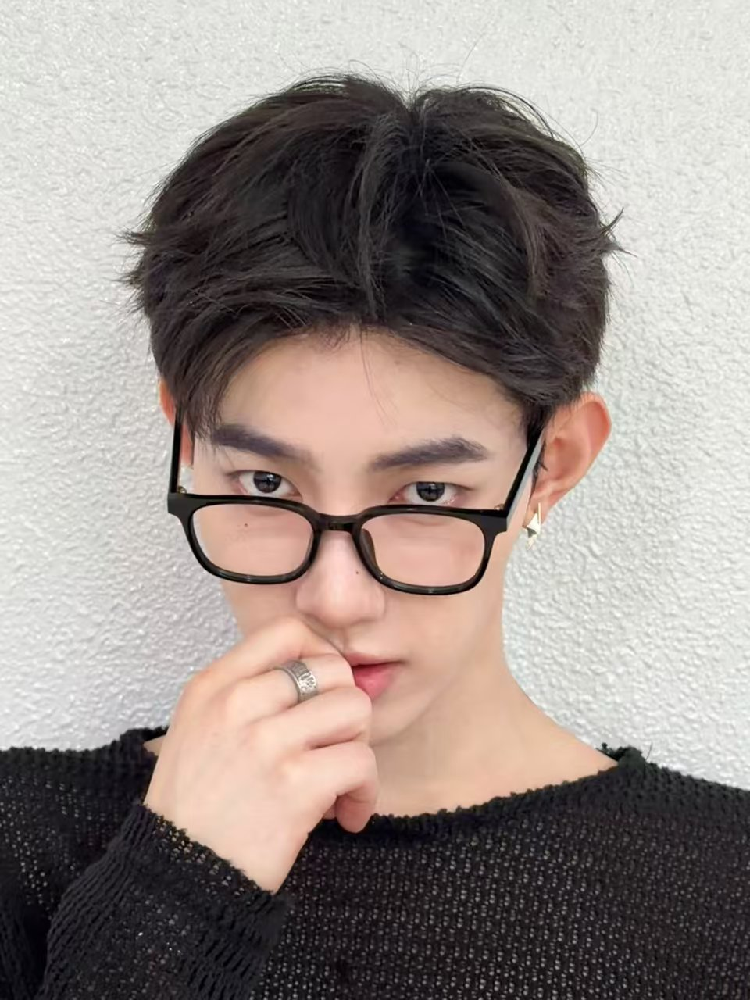
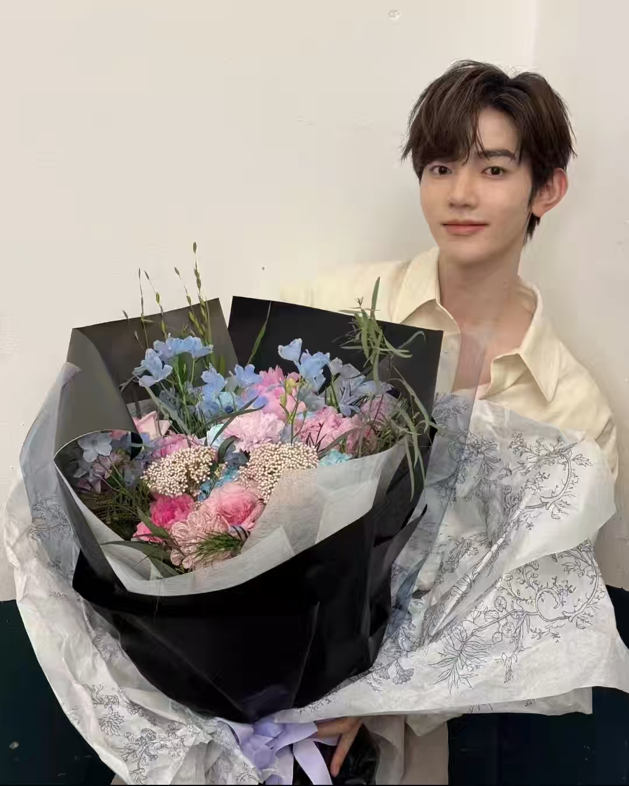
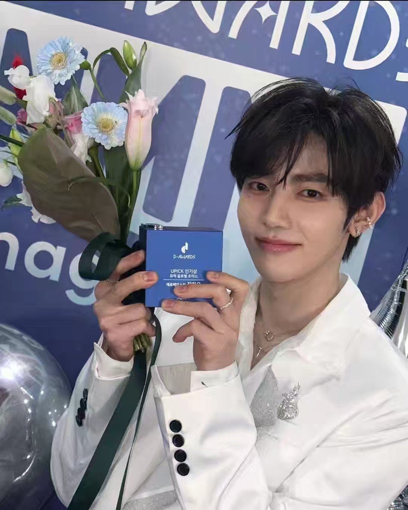

二.语录：
1.相爱的人总是会很容易找到彼此，我们是有心灵感应的，我知道你在
2.我希望你从见我的第一面就爱上我，如果无法一见钟情，那我也会用尽全力让你陷入爱里
3.有句好像已经过时了的话，叫做被爱的人总是有恃无恐，不知道我有没有给你们这样的底气， 但我确定的是，你们的爱常常可以让我恃宠而骄。谢谢你们让我的每一句问候都得到回响
4.所有为了我而付出的努力都很伟大和珍贵
5.其实我每次做选择的时候都不太能确信，但是和rosin的爱情是能够确认的，这很万幸，也让我产生了勇气
6.希望大家喜欢我的时候能觉得幸福就好了，我会先挡住的，不好的事。我会站在你们前面先挡住的，所以就相信我。

三.采访：
💬你参与了中国电视剧《骄阳似我》的 OST。作为主唱，你觉得自己的魅力是什么？
🎻虽然语言不同，但无论是中文歌还是韩文歌，我都觉得最重要的是彻底理解歌词。哪里该加入颤音、 哪里需要控制强弱，我都会一小节一小节、一个字一个字地细致练习后再演唱。技术当然也很重要，但像这 样准备的话，情感就能更好地传达出去。我觉得深入研究并好好表达出来，就是作为主唱的魅力。
💬一直做着自己喜欢的音乐时，什么时候会最感到幸福？
🎻在各种音乐里，我最喜欢 K-pop。我觉得 K-pop 不只是音乐，也包含舞台本身。现在能和 成员们一起活动，我就很幸福。我想长久地、一直好好做下去。也希望所有的决定粉丝们都能够理解并支持。

四.个人奖项：
1.2024 CIRCLE CHART MUSIC AWARDS 全球人气奖 2.2024 青龙电视剧大赏 OST人气奖 3.2024 K-WORLD DREAM AWARDS 全球UPICK选择奖 4.2024 KOOKY DAESANG KOOKY大赏第一名 5.2024 THEKKING年度艺人 6.2024 K-STAR 最佳爱豆 7.2025 D-AWARDS UPICK全球选择人气奖 8.2025 K-EXPO 全球网民奖-OST部门 9.2025 GLOBAL FAN'S CHOICE AWARDS 年度最佳OST 10.2025 微博年度热度歌手
五.时尚杂志：
《AH+》24h销售额逾282W 《时装》二小杂志24h销售额逾896W 《费加罗》二小银十刊24h销售额逾582W 《superELLE欣漾》开年封空降24h销售额264W 《V中文版》创刊后第一位开季刊男性面孔

六.单曲数据：
1. 《Always》《BOYSPLANET》C位出道奖励曲 MelonTOP100空降NO.97 2. 《I WANNA KNOW》《换乘恋爱3》OST iTunes全球歌曲排行榜NO.1，空降25个国家/地区第一，Melon男SOLO榜、QQ音乐巅峰榜、Bugs日榜、美国Soundtrack(原声带)日本Soundtrack(原声带)、韩趋等多榜第一 3. 《Refresh!》《去月球吧》OST iTunes空降11个国家第一，Melon每日艺术家男歌手、Bugs实时榜空降、Bugs日榜、Circle Chart周榜下载榜等多榜第一 4. 《红颜为谁开》《玄界之门》ED iTunes全球歌曲排行榜NO.17、空降8个国家第一，QQ音乐巅峰榜飙升榜第二、日榜第三 5. 《Coming for you》《骄阳似我》OST QQ音乐巅峰榜日榜连续43第一，全站音乐指数、在听热度榜最高第一，iTunes空降7个国家第一